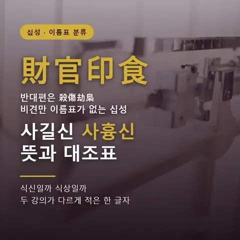
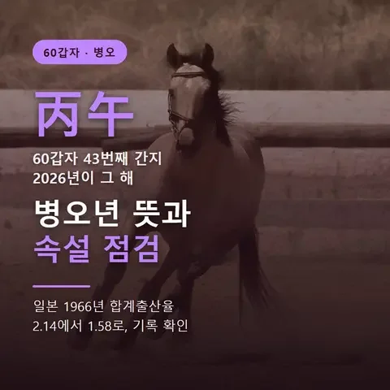
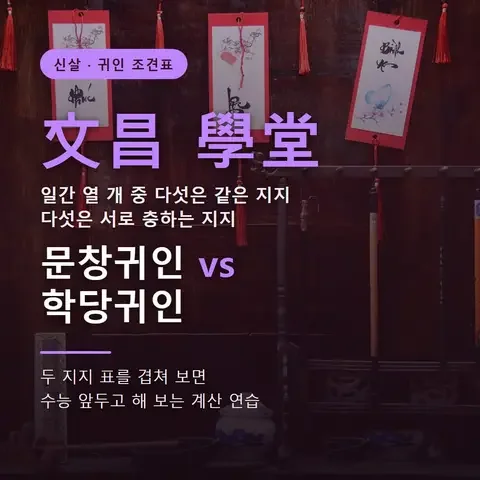
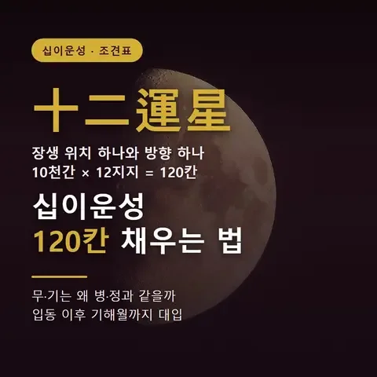
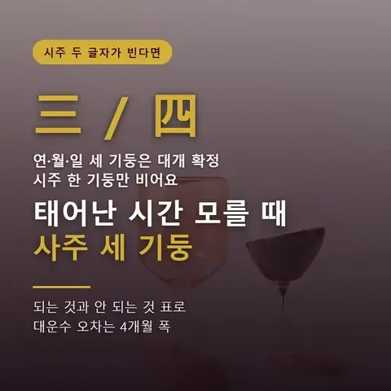
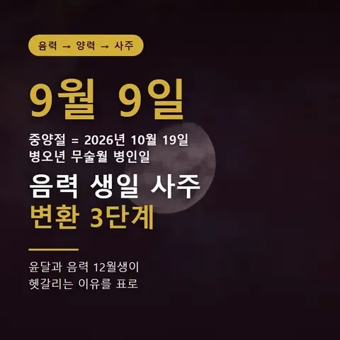

사길신 사흉신 뜻, 재관인식의 식은 식신일까 식상일까2026-10-23사길신은 재관인식, 사흉신은 살상겁효로 묶는 십성 이름표지만, 정해 만세력 두 강의는 식신과 식상을 달리 적습니다.
적천수 천간론 10구절 조견표, 갑목참천에서 계수지약까지2026-10-23적천수 천간론은 위키문헌 판본에서 열 천간을 각각 네 글자 여덟 구로 묘사하고, 첫 구절만 모으면 열 줄 조견표가 됩니다.
병오년 뜻과 속설, 일본 1966년 출산율 2.14→1.582026-10-22병오는 60갑자의 43번째 간지이고, 일본의 병오년 속설은 에도 시대 민간 믿음에서 나왔습니다.
문창귀인 vs 학당귀인, 다섯은 같고 다섯은 충이다2026-10-22문창귀인과 학당귀인은 일간 열 개 중 을·정·기·신·계 다섯에서 같은 지지를 쓰고, 갑·병·무·경·임 다섯에서는 서로 충하는 지지를 씁니다.
십이운성 조견표, 장생 위치 하나로 120칸 채우는 법2026-10-21십이운성은 천간마다 장생 지지 하나와 순행·역행 방향만 알면 10천간 12지지 120칸을 전부 채울 수 있습니다.
태어난 시간 모를 때 사주, 세 기둥으로 되는 것과 안 되는 것2026-10-20태어난 시간을 몰라도 연주·월주·일주 세 기둥은 대개 세울 수 있지만, 시주 두 글자는 비워 둡니다.
종격 5가지 조견표, 종살격(종관격)부터 종왕격까지2026-10-20종격은 한 십성이 사주를 압도할 때 그 십성을 따르는 외격이며, 비겁·식상·재성·관성·인성에 맞춰 다섯 가지입니다.
음력 생일 사주 변환 3단계, 윤달과 12월생이 헷갈리는 이유2026-10-19음력 생일은 먼저 양력으로 바꾼 뒤, 그 양력 날짜와 시각으로 연주·월주를 정합니다.
격국 정하는 순서, 비견·겁재가 투간하면 두 자료가 갈린다2026-10-19내격은 월지 지장간 가운데 천간에 투간한 글자의 십성으로 정하며, 본기를 먼저 보고 비견·겁재는 자료마다 다르게 다룹니다.